Gray & Humpback Whales - Detection
PAMGuard
*To view the Pamguard settings files used for each drift please click here.
Array
Depending on the drift that was process the array settings in Pamguard were updated to reflect the spacing between hydrophones and the hydrophone sensitivity. For our purposes we only used CH0 in Pamguard to run the detector.
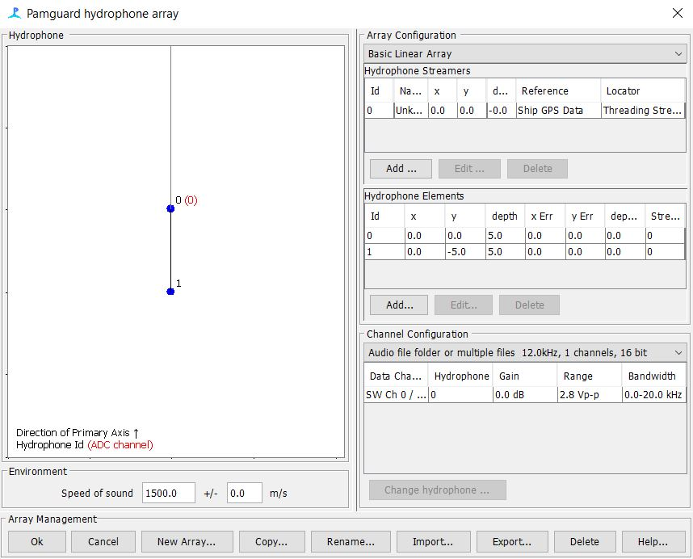
Decimation
For humpback and gray whales we decimated files to 10kHz (Figure X.) and used a Butterworth Low Pass Filter of 5kHz (Figure x).
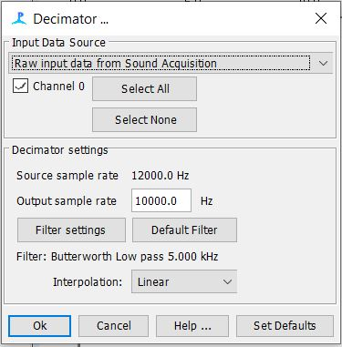
Figure x. Settings used in the decimator module in Pamguard to run the humpback and gray whale GPL detector. 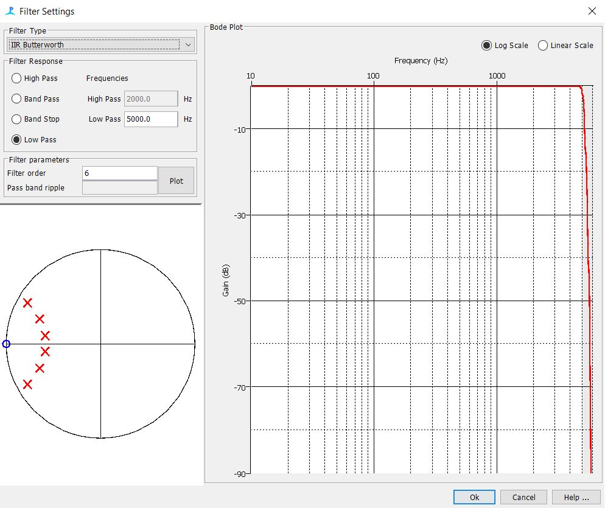
Figure x. Low Pass Filter for Humback and Gray whale GPL detector
GPL Settings
- We started with basic GPL settings from Tyler Helble’s PARM files and modified them to fit our data. For the humpback and gray whales we tested modified settings on clips that contained either humpback or gray whales until we were happy with the detectors performance.
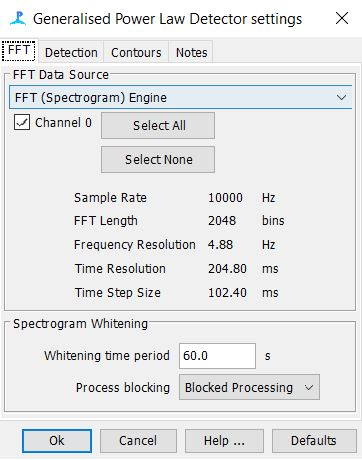
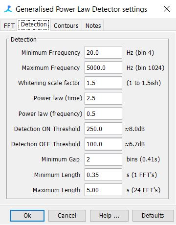
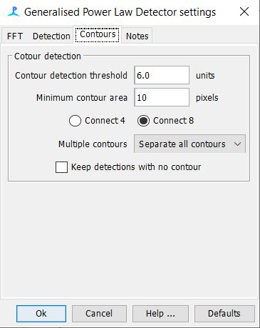
We then processed an entire drift’s recordings and looked at the detector’s performance in Pamguard Viewer Mode by spot checking that humpback and gray whale calls were being picked up by the detector. Once we were satisfied that the detector was doing it’s job, we processed the rest of the drifts.
- For this detector our aim was to over-detect and then sort out the differences between the humpback and gray detections using a classifier.
Detection Group Localizer Settings
In order for PAMpal to interact with the GPL detections we added in the Detection Grouper Module. This allows PAMpal to create events and push them back in the SQLite database in PAMGuard.
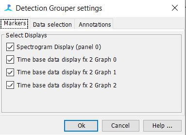
Figure x. Detection Grouper Mark Display Settings 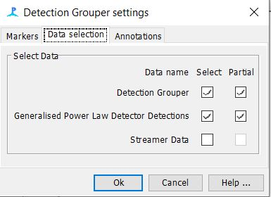
Figure X. Detection Grouper Data Selection Settings 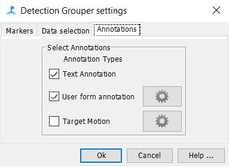
Figure x. Detection Grouper Annotation Settings It is important to note that both the “Text” and “User Form” annotation boxes must be selected here.
To setup the user form annotation (click on the gear icon)
Create new user form
Label the form “evType” then click ok (see figure X)
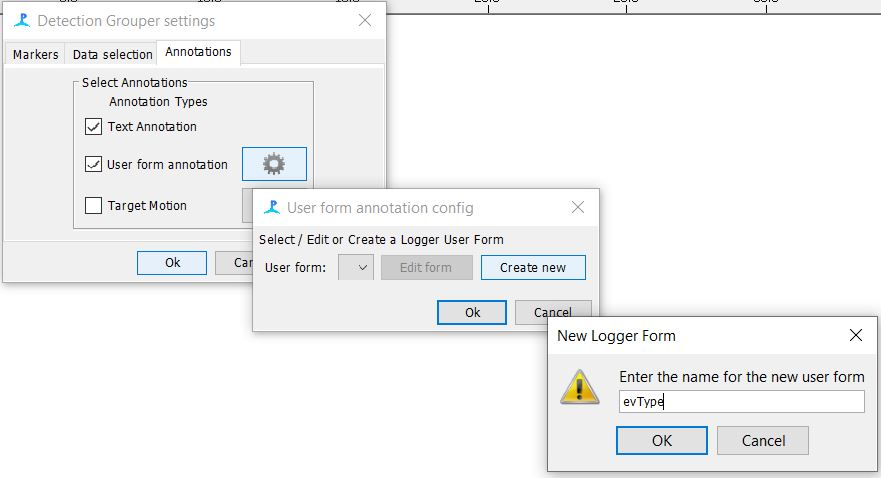
Figure x. Adding in a user form for the Detection Grouper in Pamguard Next click “edit form”
Add a lookup table and fill it out exactly as follows (see figure x.)
Title: eventType
PostTitle: eventType
DbTitle: eventType
Topic: DGEventType
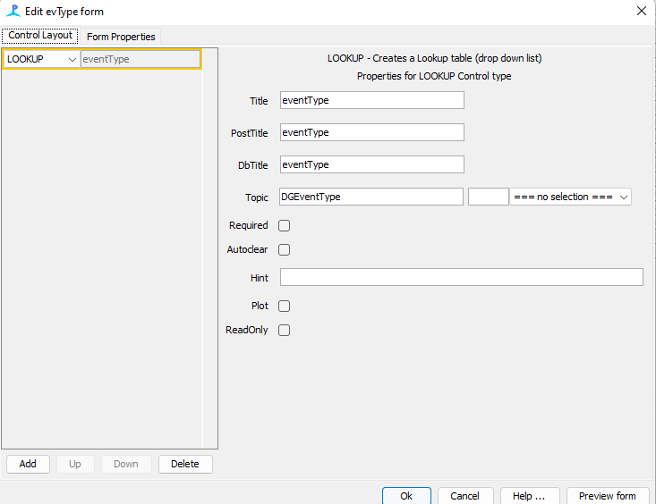
Figure x. Editing the user form for the detection grouper to work with the GPL detections
PAMGuard Output
All detections were saved to the binary files and all other data were saved to a SQLite database
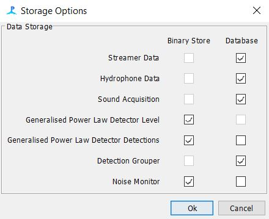
Figure x. Storage Options Settings for PAMGuard
PAMpal
- The data were then imported into PAMpal and events were created and put back into the PAMGuard database. Events were defined as 6 minute periods of continuous recordings for ADRIFT and 2 minutes for the CCES 2018 data set (limited to duty cycle 2 on 18 off) . *Add in PASCAL when we get to it.
Stratified Sub-sampling
Due to the nature of this large data set we decided to use a stratified sub-sampling method to randomly sample 20% of all events for validation.
*Add in Kaitlin’s code
Validation
- *Kaitlin to add in methods here